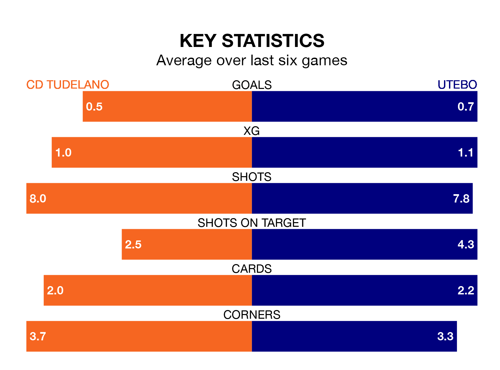

CD Tudelano face Utebo at the Estadio Municipal Ciudad de Tudela on Sunday looking to secure a first win in 13 Segunda División RFEF Group 2 games.
Tudelano have lost six and drawn six matches since they last earned three points – against Brea on November 12.
They face an Utebo side who have won five and drawn four over that time.
With 28 goals in 23 games so far this season, Tudelano are scoring more than average in the league with 1.2 goals per game. And they are conceding at an average rate, letting in 25 goals at a rate of 1.1 per game.
Utebo are also above average scorers, with 1.2 goals per game, compared to a league average of 1.1. They have conceded 0.9 goals per game.
The visitors are fourth in the table after 23 games, of which they have won 12 and drawn seven, earning 43 points.
The home team are five places behind Utebo in ninth, with seven wins and nine draws putting them on 30 points.
In the last three years, Tudelano and Utebo have played each other on three occasions. Tudelano won one of them and they drew the other.
Their last meeting was on October 15, when they played out a 2-2 draw.
Tudelano's last match was on February 18, a 1-1 draw against CD Calahorra, with Rodrigo Sanz Garro getting the goal for Tudelano.
Utebo beat CD Izarra 1-0 last time out, also on Sunday, with Luis Ángel Forcén Sacramento on the scoresheet.
Updated: 10:08 (UTC), 23/02/24